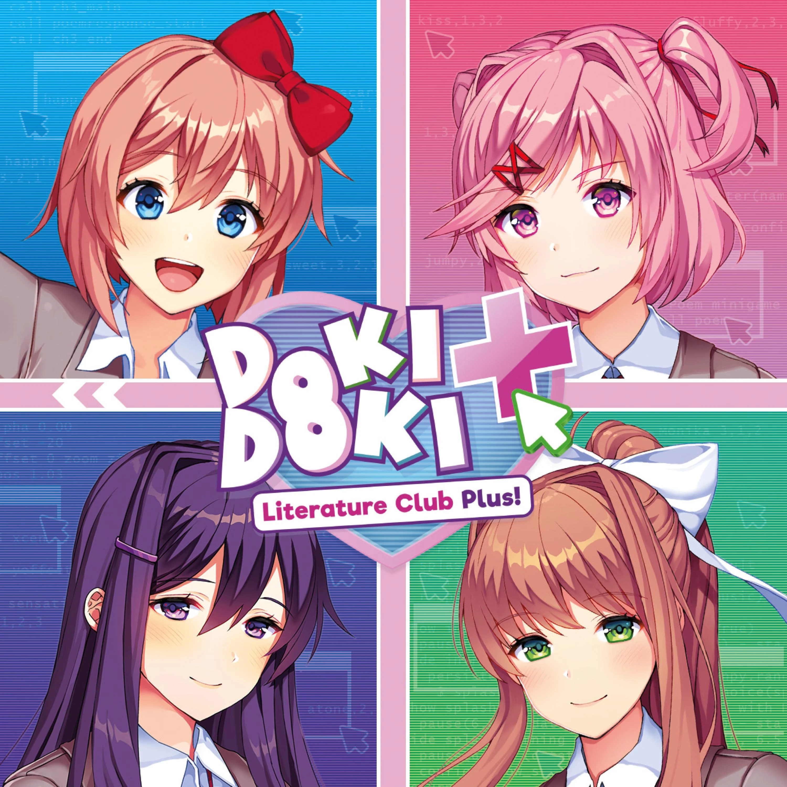

onze gamesss! - museum de pixel
wii sports
wii sports is een sportvideogame voor de nintendo wii, waarin spelers verschillende sporten kunnen spelen, zoals tennis, boksen en bowling, met behulp van bewegingsbesturing

ddlc
doki doki literature club (ddlc) is een visuele roman die de schijnbare eenvoud van een dating-sim combineert met duistere en psychologische elementen

left 4 dead 2
left 4 dead 2 is een coöperatieve first-person shooter waarin spelers samen als overlevenden strijden tegen hordes zombies in verschillende scenario's en campagnes